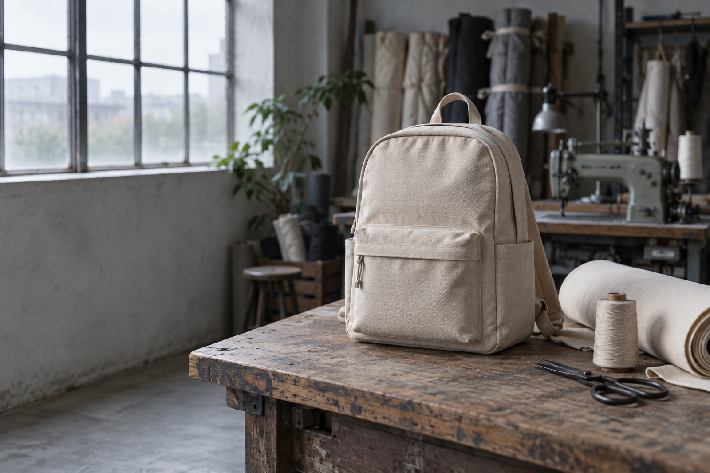
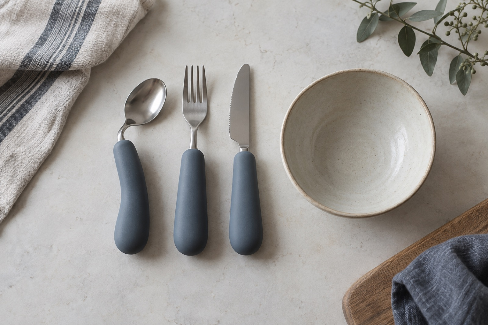
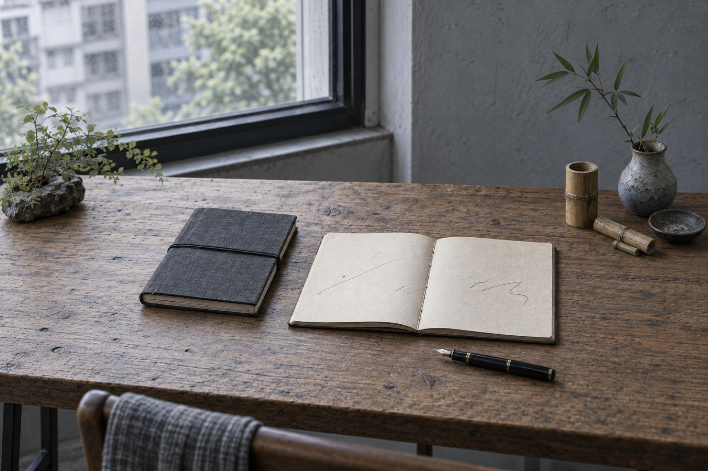
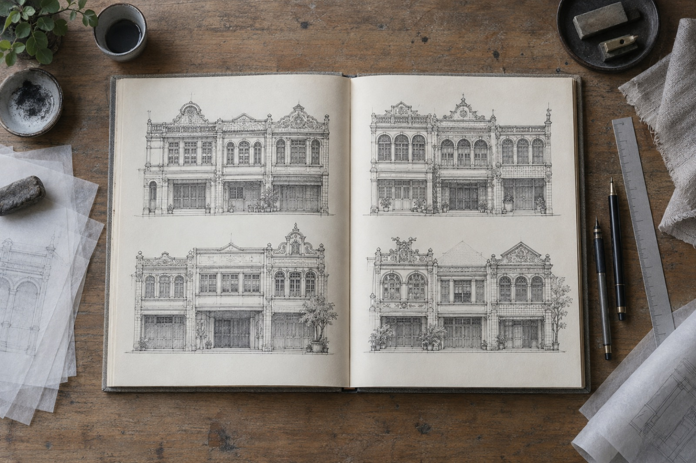
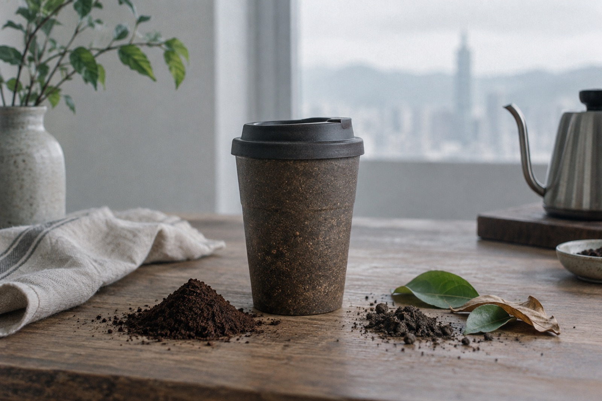
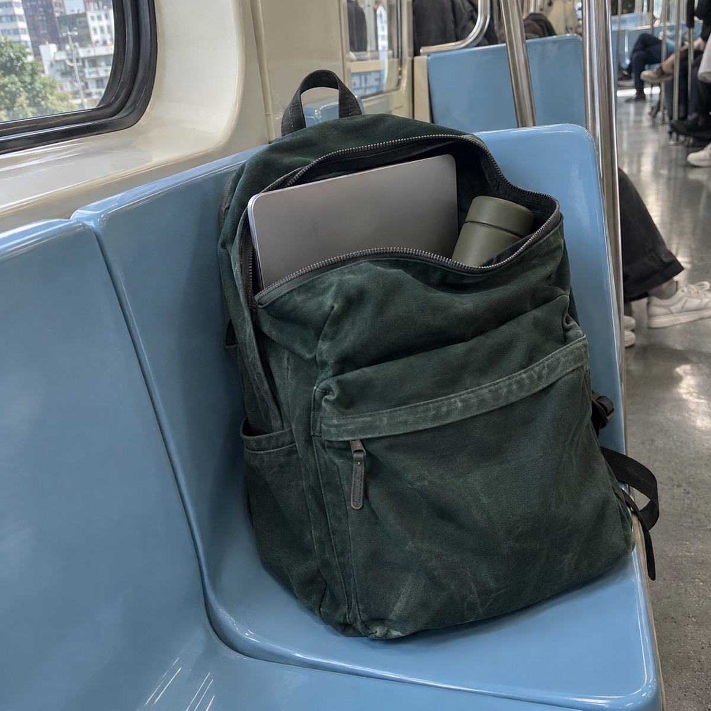
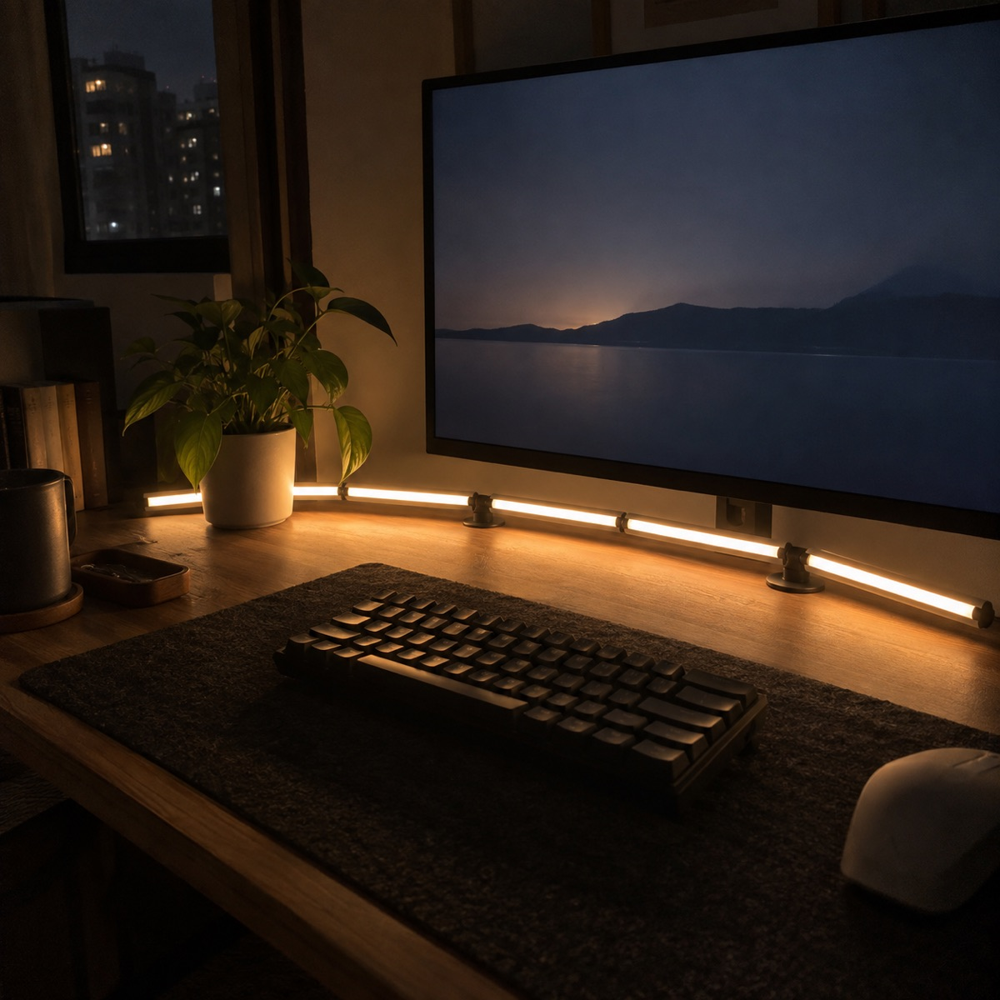

募資中 剩 12 天為什麼在島造贊助比較放心？
產地與工廠公開
每個專案都必須揭露材料來源與生產夥伴，查得到才上得了架。
排程寫成合約
設計、打樣、生產、出貨四個里程碑公開上牆，逾期會主動通知你。
金流進度透明
募資金額、贊助人數、剩餘天數即時更新，數字不經人工修改。
未達標全額退
募資期滿未達目標金額，款項自動原路退回，不收任何手續費。
正在發生的提案
數字每分鐘更新，倒數七天內的專案會標上提醒。
 設計生活
設計生活
 科技硬體
剩 5 天
科技硬體
剩 5 天
 出版與影像
出版與影像

社會設計 剩 3 天
設計生活 遊戲桌遊
遊戲桌遊
社會設計
剩 3 天
科技硬體
剩 5 天

出版與影像 剩 7 天
食品飲料
出版與影像
遊戲桌遊
科技硬體
剩 5 天
遊戲桌遊
設計生活
設計生活
出版與影像
剩 7 天
社會設計
剩 3 天
已經收到的人怎麼說 ＆ 平台保障

已收到回饋
去年贊助的帆布包，說三月出貨就三月到，連打樣延期都有發公告，這很難得。

已收到回饋
第一次贊助硬體，看到工廠照片一週更新一次，心裡踏實很多。
-
未達標全額退款
募資失敗不扣款、不收手續費，款項 7 個工作天內原路退回。
-
排程逾期主動告知
任一里程碑逾期超過 14 天，平台會代為通知所有贊助者並要求說明。
-
上架前人工審核
每個專案都經過產地、樣品與生產能力查核後才開放募資。